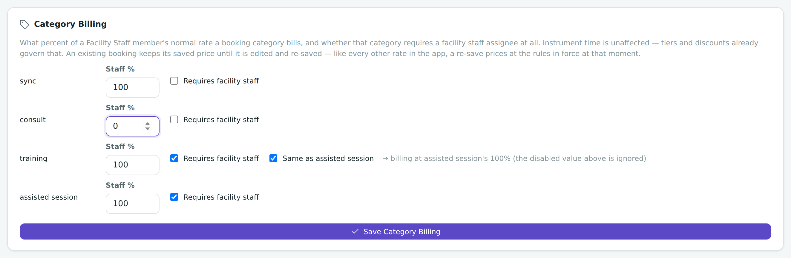

Chapter 15
Settings, Admin Mode & Discounts
Set your preferences, decide how tax, overhead, staff time and cancellations are billed — and grants are tracked — unlock the extra billing controls with Admin Mode, and give labs their standing discounts.
What you'll be able to do
- Find and change the general preferences
- Set your facility's tax and currency — and know when a change takes effect
- Set up named Pricing Tiers so different kinds of lab pay a different overhead percentage, with optional per-instrument overrides
- Decide what percent of a facility staff member's rate each booking category actually bills, and which categories require a facility staff member at all
- Track a funding Grant with a name and number, pick it on projects and bookings, and choose whether the app shows grants by name or by number
- Set whether a cancelled booking's charge still counts toward Project Costs, separately for a cancellation before and after the booking's start time
- Turn Admin Mode on and off, and understand exactly what it does and doesn't protect
- Set a standing discount percentage for a lab or group
- Rename or merge a lab/group everywhere it appears, in one step
- Read how a booking remembers its own discount, and revoke or apply one
- Find the About panel when you need your version number
Preferences
Settings opens to a small set of general preferences that control how the app greets you.
- Open Settings from the sidebar.
- Find the option to show the welcome screen at startup, and turn it on or off.
- Find Ask about single-instrument bookings and turn it on or off.
💡 Tip. Turning the welcome screen off doesn't remove your access to sample data or the guided tour — both are still one click away in Settings, under "Sample Data & Walkthrough." See Loading sample data and The guided tour.
Ask about single-instrument bookings controls whether the "Single Instrument Booking?" prompt appears the first time you add an instrument to a new booking. It's on by default. If you (or someone else on this browser) previously ticked "Don't ask me again" on that prompt, this toggle is how you turn it back on — switch it on here, and the prompt starts appearing again on your next new booking.

Billing rates
This card used to hold four numbers — Internal Overhead %, External Overhead %, Tax % and Currency. It now holds two: overhead moved to Pricing Tiers below, where each lab can be given its own named overhead percentage instead of one flat facility-wide pair. Tax and currency still apply the same way to every booking, so they stayed here.
- Open Settings and find Billing Rates.
- Set Tax % — applied on top of a booking's after-overhead total.
- Set your Currency symbol so totals display the way your facility expects.

🔍 Why it works this way. A flat Internal/External split assumes every lab fits into exactly one of two buckets, which doesn't hold for a facility that also serves academic collaborators or industry clients at different rates. Naming as many tiers as you actually need — Internal, Academia, Industry, or anything else — replaces that assumption with a real choice per lab. See Pricing tiers below for how a lab gets one, and what happens if you never set one up.
⚠️ Careful. Changing tax or currency here only affects new bookings from that moment on. Every booking that's already been saved keeps the total it was calculated with when it was created — changing today's tax rate will never quietly rewrite last month's invoices. See Cost snapshots for why, and the worked example for how the numbers actually combine.
🧪 Try it. With sample data loaded, note the total cost on one existing booking. Then go change the Tax % in Settings and reopen that same booking. Its total hasn't moved — only a brand-new booking would use the new tax rate.
Pricing tiers
A pricing tier is a name — Internal, Academia, Industry, or anything your facility calls its own rate categories — paired with one overhead percentage. Create as many as you need, then give each lab one of them so its bookings are overheaded at that lab's own rate instead of one facility-wide pair.
- Open Settings and find Pricing Tiers.
- Click Add Tier, give it a name and an overhead percentage, and save.
- Assign a tier to a lab from the Group (Lab / Organization) Discounts & Pricing Tiers editor under Admin Mode — see Group discounts below. Each lab gets at most one tier.

💡 Tip — two things that matter most. First: a facility that never creates a tier keeps behaving exactly as before — any lab with no tier assigned keeps pricing at the same overhead sum your facility always used. Second: changing a tier's name or percentage never re-prices a booking already saved under it — each booking keeps the overhead percent it actually got, the same way it keeps its own tax rate and discount. Only a booking saved (or re-saved) after the change uses the new percentage.
An instrument can also have its own rate for one specific tier, overriding its normal cost just for bookings billed under that tier:
- Turn on Admin Mode (below) if it isn't already on.
- Open the instrument's Edit screen and find Per-Tier Rate Overrides.
- Type a rate for any tier that should charge differently on this instrument; leave a tier's box blank to keep using the instrument's normal Cost for it.
A lab with no tier assigned prices at the overhead your facility used before Pricing Tiers existed — those two old numbers are no longer editable from Billing Rates, so the only way to give a lab its own rate now is to assign it a tier here.
🔍 Why it works this way. A rename or a percentage change is exactly the kind of edit that must never quietly reach into the past — a facility that renegotiates its Academia rate next year shouldn't discover that every booking that tier ever billed just changed too. Freezing the percent into each booking at save time (see Cost snapshots) is what makes an old invoice trustworthy without a screenshot.
Retiring a tier follows the same rule as everywhere else in this app: a tier that's never been assigned to a lab or billed on a booking can be deleted outright; one that has is retired instead — labelled "(Retired)" and no longer offered for new assignments, but every lab and booking that used it keeps reading correctly, and it can be restored at any time.
Category Billing
Every booking has a category — Sync, Consult, Assisted Session, Training, or anything else your facility has added. This card decides, per category, how much of a facility staff member's normal hourly rate that category's bookings actually bill.
- Open Settings and find Category Billing.
- For a category, set Staff % — 100% bills a staff member's full normal rate; a lower number (even 0%) bills less, or nothing, for that category's staff time.
- Tick Requires facility staff if a booking in that category should refuse to save unless at least one facility staff member is assigned to it.
- On Training only, tick Same as assisted session to make Training always bill at whatever percentage Assisted Session currently uses, instead of keeping its own separate number.
- Click Save Category Billing.

🔍 Why it works this way — no more duplicate zero-rate people. Before this existed, the only way to have a facility staff member help on a booking without charging for their time was to add a second copy of that person to the People directory with their rate set to zero, just for that kind of session. That splits one real staff member's history across two records — half their sessions under their real record, half under a fake zero-rate stand-in. Category Billing lets the category decide the percentage instead of the person, so a Consult can bill 0% staff time while the actual staff member who ran it stays properly recorded on that session, and their one record shows their whole history — Consults, Training, everything — in one place.
This only scales facility staff time — instrument charges are governed by Pricing tiers and Billing Rates and are unaffected by a category's percentage. And like every other rate in this app, a category's percentage only applies the next time a booking is saved; a booking already on the books keeps the percentage it was actually billed at.
💡 Tip. Out of the box, every category bills at 100% (unscaled — nothing changes until you touch this card), and Assisted Session and Training both start requiring a facility staff member, matching how those two categories already worked before this card existed.
Grants
A grant records one funding source — a name, an optional grant number, and a free-text note — so it can be picked on a project or on a booking and later reconciled against everything billed to it.
- Open Settings and find Grants, then click Add Grant.
- Enter a Grant Name (required), an optional Grant Number, and an optional Note.
- Build the Allowed Users list — the people who can be picked when someone chooses this grant on a project or booking.
- Save. The grant is now selectable from the Grant field on a project and on a booking.

One setting, Display Grants By (Name or Number), decides how every grant appears everywhere in the app at once — on a project, on a booking, in Project Costs, and in every exported report. There's no separately stored grant name sitting on a project or a booking that this could leave out of date: switching the setting and saving changes what every one of them shows immediately. If the field you've chosen to display is blank on a particular grant, the other one shows instead, so a grant entered with only a number still displays as something.
🔍 Why it works this way. A stored grant name on a project or booking would freeze at whatever it said the day it was saved, so switching the display setting later would leave old records showing the wrong choice while new ones showed the new one — the same drift problem Cost snapshots is designed to avoid for money. A grant's own name and number aren't billing figures, so nothing is lost by having every display resolve them fresh instead.
Grants are retired, not deleted, following the same rule as people, instruments and pricing tiers: a grant billed against no project, booking, or logged service entry can be deleted outright as a typo with nothing to protect; one that's already billed against real work is retired instead — labelled "(Retired)", no longer offered for new work, but every project and booking that used it keeps reading correctly, and it can be restored at any time.
Grants also show up in a project's Project Costs card and in every exported report (XLSX, DOCX and PDF), so a grant's running total can be checked against the projects and bookings actually billed against it.
Cancellation Billing Rules
When a booking is cancelled, two independent choices decide whether its cost still counts toward a project's Project Costs card: one for a cancellation before the booking's scheduled start time, one for after it.
- Open Settings and find Cancellation Billing Rules.
- Set Cancelling Before Start Time to Charge dropped or Charge kept.
- Set Cancelling After Start Time to Charge dropped or Charge kept.
- Click Save Cancellation Rules.
Out of the box, before-start cancellations drop the charge and after-start cancellations keep it — exactly how this app always behaved, so a facility that never opens this card keeps working exactly as before.
🔍 Why it works this way. A cancellation before the start time means nothing was actually held — no instrument or staff time was ever occupied — so there's normally nothing to bill. One after the start time means the facility had already reserved that time and couldn't offer it to anyone else, which is why the charge stands by default. See Cancelling a booking for the full walkthrough of what cancelling does and doesn't touch.
⚠️ Careful — the cancel dialog reads these settings, it doesn't have its own opinion. Whatever the confirmation message says when someone actually cancels a booking is generated from exactly what's set here — it can never describe a rule the app isn't applying. If you set Before Start Time to "Charge kept," the dialog for a not-yet-started booking will say so plainly, not the old "charge dropped" wording.
Admin Mode can still step in for one specific after-start cancellation: with Admin Mode on, cancelling a started booking that has a cost offers a three-way choice — keep the booking as scheduled, cancel and waive the charge, or cancel and keep the charge — regardless of what's set here. A before-start cancellation never gets that per-booking override; it always follows the rule above automatically, since nothing was held to begin with.
Admin Mode
Admin Mode is a single toggle that unlocks the billing-sensitive controls in the app: the Group Discounts and Pricing Tier assignment editor, per-instrument pricing-tier rate overrides, the per-booking manual discount, revoking or applying a discount after the fact, and the option to waive a charge when cancelling a booking that already started. Pricing Tiers, Category Billing, Grants and Cancellation Billing Rules themselves are not behind Admin Mode — anyone can open those cards and change them without turning it on.
- Open Settings and find the Admin Mode toggle.
- Turn it on to reveal the Group Discounts editor and the extra billing controls elsewhere in the app.
- Turn it off again once you're done — the controls disappear, but nothing you set with it on is undone.
⚠️ Careful. This is not a lock. Admin Mode has no password, no login, and no per-person accounts behind it — there's no such thing as accounts in this app at all. Anyone using this browser on this device can flip the toggle on themselves in a few seconds. Treat it as a "billing controls, show/hide" switch that keeps day-to-day screens simple, not as security that keeps anyone out.
🔍 Why it works this way. The whole app is a single database sitting in one browser with no server checking who's allowed to do what. Building a real permission system on top of that would be misleading — it would look like security without providing any. A plain toggle is honest about what it actually is: convenience, not protection. See Admin Mode isn't security for more.
Group discounts
A group discount is a standing percentage off time-billed instrument costs for every booking made under a particular Lab/Group — set once here, instead of typing a discount into every booking by hand. The same editor also carries each lab's Pricing Tier assignment, side by side with its discount.
- Turn on Admin Mode (above) if it isn't already on.
- Open Settings and find the Group Discounts editor.
- You'll see one row per Lab/Group that has at least one person on record — labs with nobody in them yet don't get a row, since there's nothing to attach a discount or a tier to.
- Type a percentage into a lab's row to set its standing discount.
- Pick a Pricing Tier from the same row's dropdown to decide that lab's overhead percentage, or leave it on "No tier (legacy)" to keep pricing that lab at your facility's old Internal + External overhead sum.

🔍 Why it works this way. A discount is meaningless attached to a lab nobody belongs to — there'd be no booking that could ever use it. Building the list from labs that actually have people keeps the editor short and relevant instead of an endless list of hypothetical group names. It also means a lab name typo creates its own separate row here too — see Lab name typos create duplicate labs.
Once a lab has a discount set, every new booking made under that Lab/Group picks it up automatically — you don't set it per booking.
🔍 Why it works this way — the booking remembers its own percentage. When a booking is saved, whatever discount percentage applied at that moment is frozen into it, the same way its total cost is (see Cost snapshots). If you later change a lab's standing discount from 5% to 10%, every booking already saved keeps showing the 5% it actually got — only new bookings see the new 10%. This is exactly why a booking's discount can be individually revoked or re-applied without touching the lab's overall setting.
An admin can override a single booking's discount directly on that booking, using Revoke or Apply:
- Open the booking (from the Calendar or a project's page).
- With Admin Mode on, find the discount control and choose Revoke (to remove a discount this booking currently has) or Apply (to add one it doesn't).
- You'll be asked to choose a scope: Just this booking, which changes only the one record you're looking at, or Future too, which also updates the lab's standing percentage so every booking made under that lab from now on uses the new rate.

💡 Tip. Remember the discount only ever affects the time-billed instrument money on a booking — never staff time, and never per-unit or per-weight charges. See the full breakdown in How Costs Are Calculated.
Rename a lab or group
Because Lab/Group is free text (see Labs & departments), the same lab can end up spelled two different ways — "Bio-Photonics Lab" and "BioPhotonics Lab," say. The Rename Lab/Group tool fixes that everywhere in one step, instead of editing every person by hand.
- Turn on Admin Mode if it isn't already on.
- Open Settings and find Rename Lab/Group in the Admin Mode area.
- Pick the existing (old) lab name from the list.
- Type the new name — either a genuinely new spelling, or the name of another lab that already exists, if you're merging two duplicate labs into one.
- Confirm.
A single rename updates, in one pass:
- Every person currently recorded under the old lab name.
- The lab's row in Group Discounts — if you renamed into a lab that already had its own discount row, that lab keeps its discount percentage; the old lab's row disappears rather than the two being averaged or added together.
- The Lab/Group label saved on every past booking made under the old name, so old records and reports read consistently under the new name too.
🔍 Why it works this way. A lab name is written in three different places at once — on each person, on the discount editor, and stamped onto every past booking — precisely because it's meant to read the same everywhere. A rename that only fixed the people list would leave old bookings and the discount editor still showing the stale spelling, right back where the duplicate-lab problem started.
⚠️ Careful. Renaming a lab only changes its label — it never recalculates anything. A past booking's total cost stays exactly the frozen number it was saved with (see Cost snapshots), even if that booking's Lab/Group label now reads differently and even if you merged it into a lab with a different discount percentage.
🧪 Try it. With sample data loaded and Admin Mode on, open Rename Lab/Group, pick any existing lab, and rename it to a brand-new spelling. Check the People directory, Group Discounts, and one of that lab's past bookings — all three now show the new name, and the booking's total is unchanged.
About
The About panel tells you exactly which version of the tracker you're running, which is useful when reporting a problem or checking whether you're on the newest release.
- Open Settings and scroll to About.
- Note the version number and the underlying engines listed there if you ever need to describe your setup to someone helping you troubleshoot.
Check yourself
A colleague asks if turning on Admin Mode is like logging in as an administrator. Is that accurate?
No. Admin Mode is a plain on/off toggle with no password or account behind it — anyone at that browser can turn it on themselves. It only shows or hides billing controls; it isn't security.
You set the Bio-Photonics Lab's discount to 10% today. Does a booking from that lab saved last month, when the discount was 5%, change to 10%?
No. A booking freezes the discount percentage it was saved with. Only new bookings made after the change pick up the new 10% — unless an admin explicitly revokes or re-applies a discount on that specific old booking.
Where would you look to find out which version of the app you're running?
Settings → About.
You discover "Confocal Lab" and "Confocal-Lab" are the same group, entered two different ways. What's the fastest fix, and does it touch past booking totals?
Use Rename Lab/Group (Admin Mode) to rename one into the other — it updates every person, the discount row, and the label on past bookings in one step. It never recalculates a booking's frozen total.